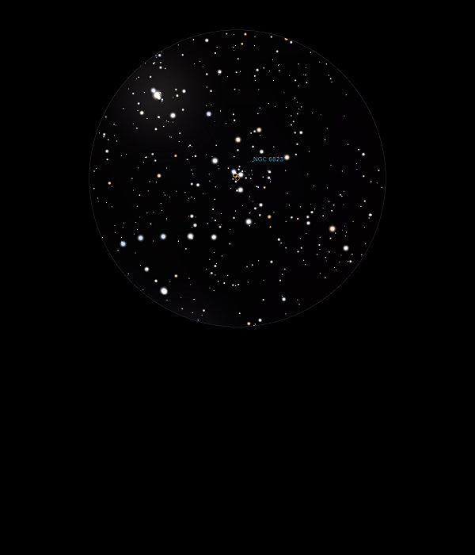

NGC 6823 & NGC 6820
Open Cluster and Emission Nebula in
Vulpecula
NGC 6823 & NGC 6820
Mag 7.1
07/07/13
Open
Cluster NGC 6823, sparse, three? stars in line almost joined
Surrounded by faint but visible haze in 12mm which is NGC 6820
04/09/13
A really
neat wide double at the centre of the cluster sets the
sprinkle of stars off which form around it
09/07/15
Smaller, with less members than NGC 6830, just a few FOVs away
A row of 6 stars between Mags 8.45 and 9.45 just fit into the
FOV in 18mm with NGC 6823 above the bottom star
The whole asterism reminds me of a scythe handle with it's
double curve
All very sharp in 18mm which gives a lovely contrast between
the dark of the background and the sharpness of the stars
31/08/16
Hardly seems to be an Open Cluster at all in 12mm
Sparse but enclosed in an inverted 'Y' shape of stars of 8th
and 9th magnitude
There could just be a hint of the nebulosity which is NGC 6820
in 18mm, slightly brighter than the surrounding starfield